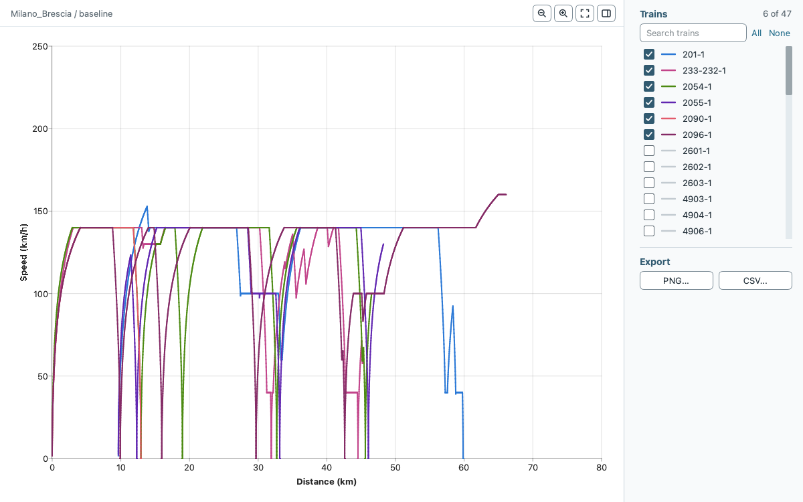

Bundled cases¶
The application packages contain six bundled cases, and the releases page offers each as an .egscene file. This page lists them with their size.
Case |
Release file |
Tracks |
Stations |
Services |
Note |
|---|---|---|---|---|---|
Netherlands |
|
268 |
41 |
8 |
Every service ends at its last stop: the train leaves the network after its dwell. |
Paimpol |
|
6 |
10 |
2 |
Paimpol, France. Includes passenger data. |
Copenhagen |
|
168 |
94 |
24 |
Copenhagen, Denmark. |
Milano_Brescia |
|
38 |
29 |
62 |
Milan to Brescia, Italy. The gradients are stored as rise per length; the dataset readme gives them in per mille. |
Assignment Gvc-Gdg-Ut |
|
2 |
3 |
4 |
Synthetic two-track fixture. Sources and terms in |
Amsterdam_Hilversum_Student |
|
268 |
41 |
1 |
Fictional teaching timetable on the Netherlands network, added after release v1.0.2. See the student case guide. |
The counts are the numbers of entries in infrastructure.json (tracks), stations.json (stations) and services.json (services), so they can differ from the number of trains in a result window. The case folders are in EGTRAIN/QEGTRAIN/Scenes in the repository and inside the application packages.
The source, changes and terms of each bundled case are in DATA.md at the top of the repository.

The Speed / distance result window of Milano_Brescia (baseline) after a run, with six of its 47 trains shown.